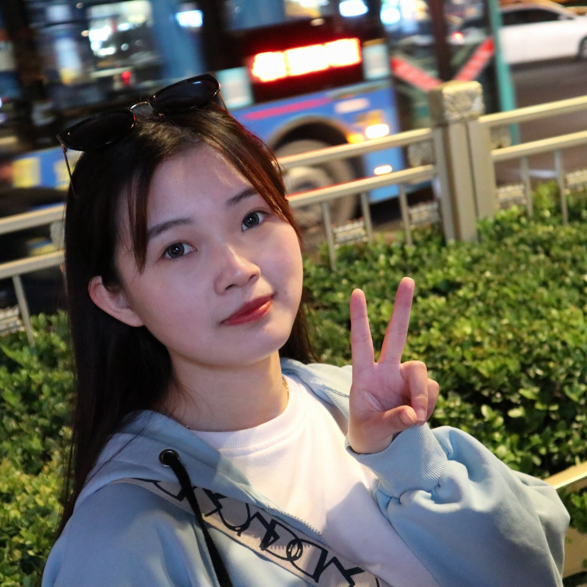
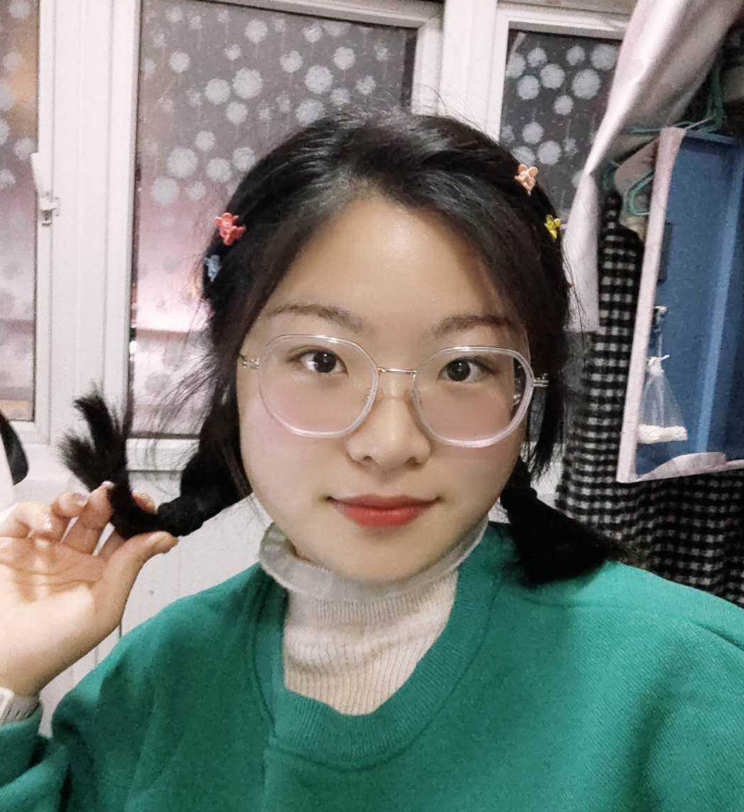
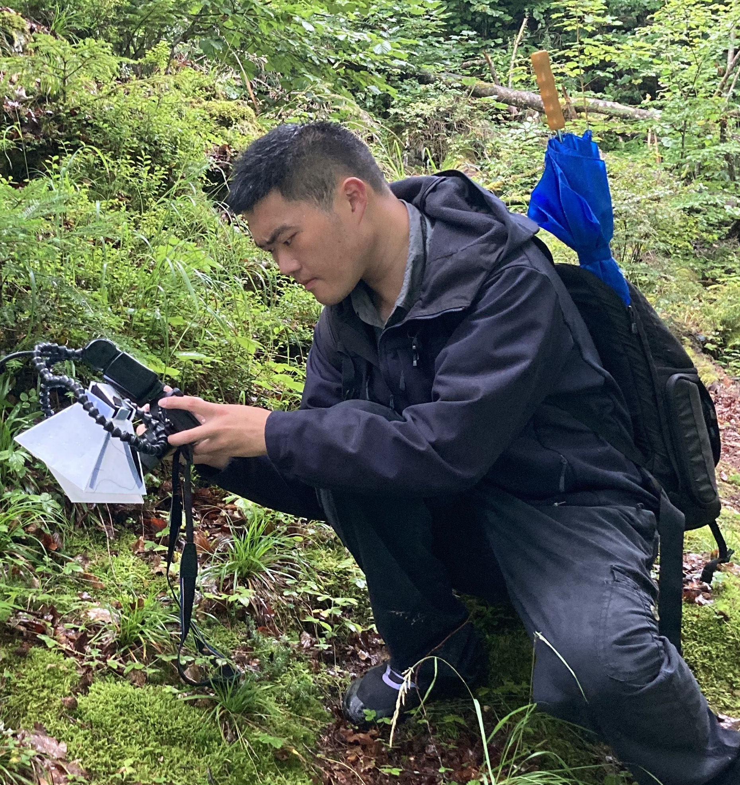

Mei Tao
PhD Student (2020-)
B.S., Anhui Science and Technology Uni.
taomei{@}zju.edu.cn
Chao Liu
PhD Student (2020-)
B.S., Shandong Agricultural Uni.
xzliuchao{@}zju.edu.cn
Co-Advised with Dr. Yun Chen
Xinyi He
PhD Student (2023-)
B.S., Northwest AF Uni.
hhxy{@}zju.edu.cn
Yixiao Zhu
PhD Student (2021-)
B.S., Zhejiang Uni.
3170100398{@}zju.edu.cn

Guozheng Ou
PhD Student (2021-)
B.S., Hebei Agricultural Uni.
ouguozheng{@}zju.edu.cn
Weiyin Wu
PhD Student (2022-)
B.S., South China Agricultural Uni.
wuweiyin{@}zju.edu.cn
Jianchao Zhao
Masters Student (2022-)
B.S., Zhejiang Uni.
zhaojc{@}zju.edu.cn

Xianfeng Mi
Masters Student (2023-)
B.S., Anhui Agricultural Uni.
22316090{@}zju.edu.cn
Jiarong Chen
PhD Student (2023-)
B.S., Zhejiang Uni.
12316064{@}zju.edu.cn
Co-Advised with Dr. Ronghui Pan

Jingxuan Chen
PhD Student (2024-)
B.S., Zhejiang Uni.
chenjxzju{@}outlook.com
Qiancheng Zhuang
Masters Student (2024-)
B.S., Huazhong Agricultural Uni.
zhuangqiancheng{@}zju.edu.cn

Shuqin Chen
Masters Student (2024-)
B.S., Jilin Agricultural Uni.
chenshuqin{@}zju.edu.cn